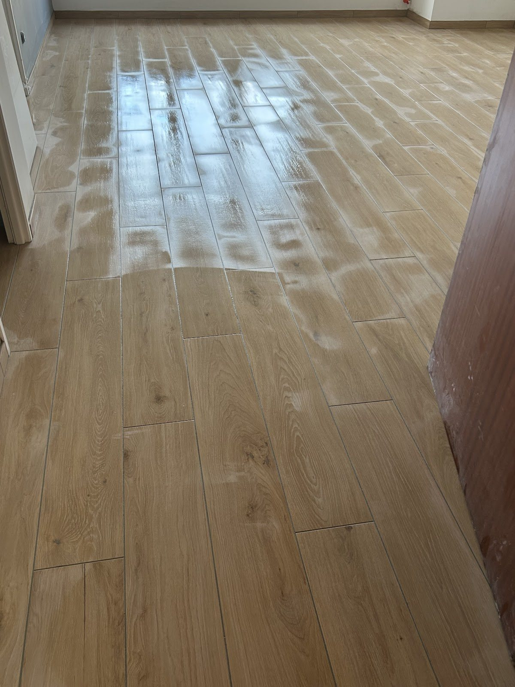
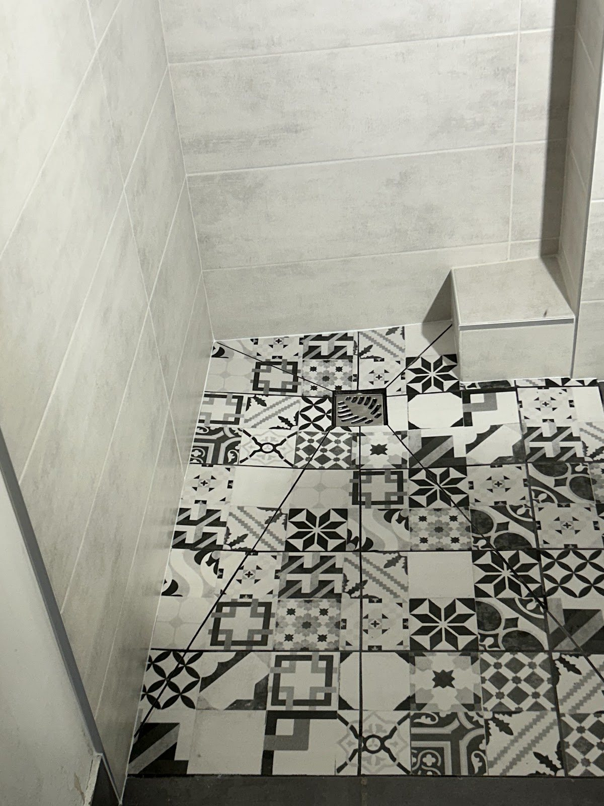
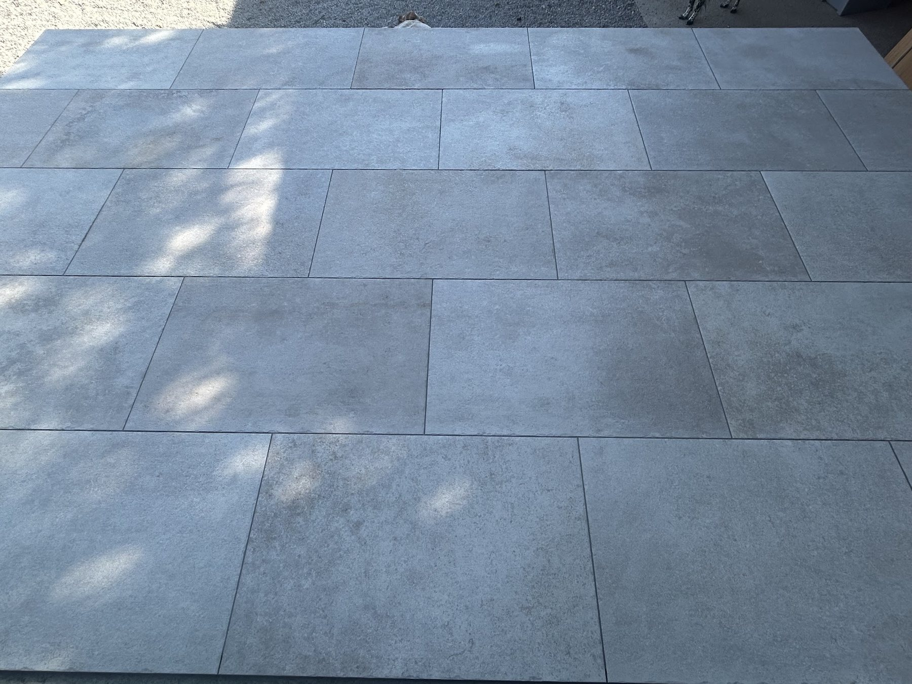
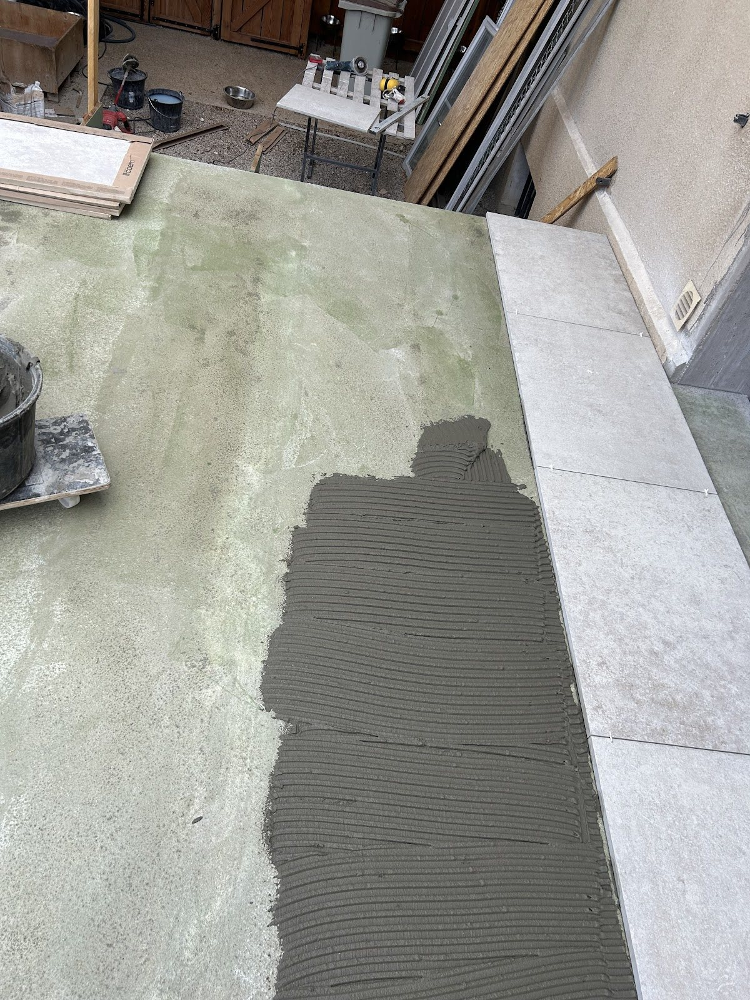
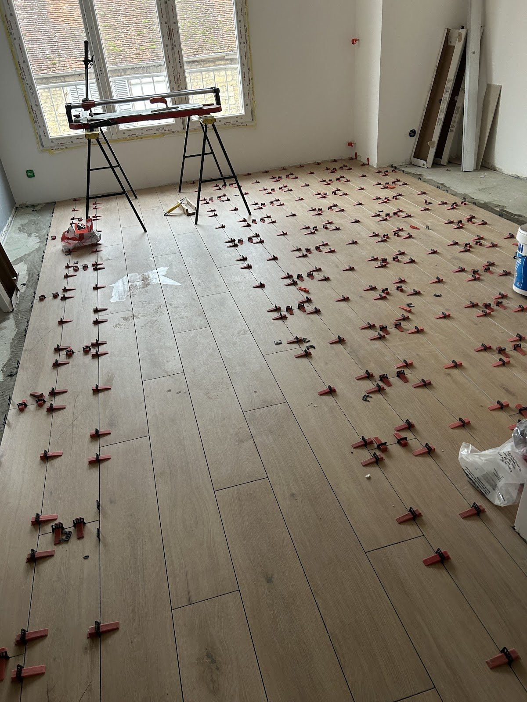
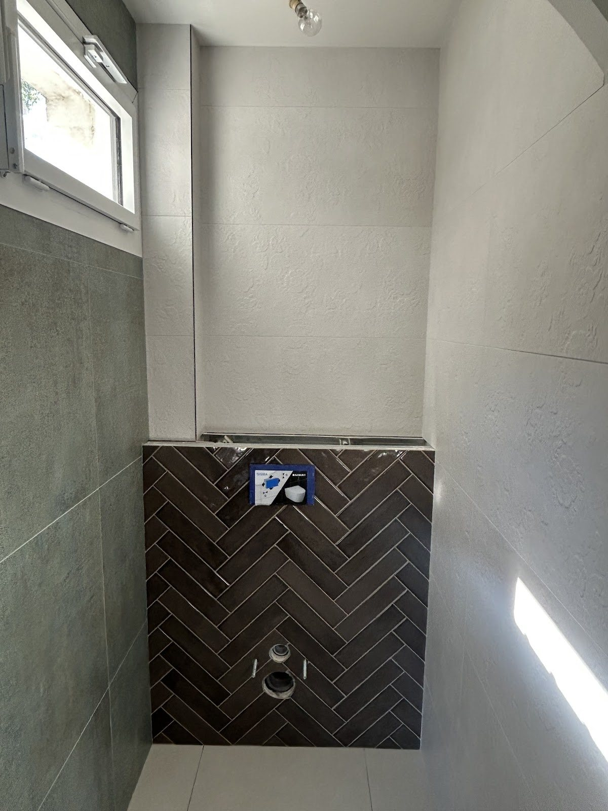

01
Carrelage de sols intérieurs
Pour les pièces de vie, couloirs et espaces du quotidien : une pose régulière, des coupes maîtrisées et un rendu propre jusque dans les finitions.
Parler de votre projet ↗Pose de carrelage au sol, faïence de salle d’eau et terrasses : un travail soigné, précis et accompagné de conseils clairs à chaque étape.
Chaque réalisation demande de la précision dans les alignements, les coupes et les raccords. Le soin apporté aux détails fait toute la différence une fois la pièce terminée.

Pour les pièces de vie, couloirs et espaces du quotidien : une pose régulière, des coupes maîtrisées et un rendu propre jusque dans les finitions.
Parler de votre projet ↗
Murs de douche, faïence et sols : la réussite tient autant au choix des formats qu’à la précision des coupes, des angles et des raccords. Une pose régulière permet de garder des lignes propres et un ensemble visuellement cohérent, jusque dans les zones les plus techniques.
Échanger sur votre salle d’eau ↗
Une terrasse réussie doit rester lisible et harmonieuse depuis la maison comme depuis le jardin. Formats, sens de pose, alignements et finitions participent au rendu final pour créer un extérieur net, structuré et agréable au quotidien.
Parler de votre terrasse ↗

Les avis disponibles reviennent régulièrement sur les mêmes qualités : travail méticuleux, ponctualité, écoute, conseils et clarté des explications.
Dans un projet de carrelage, la qualité perçue se joue souvent dans les détails : continuité des lignes, régularité des joints, raccords autour des équipements et cohérence entre le sol et les murs. C’est ce niveau d’attention qui donne à l’ensemble une finition plus nette et plus durable visuellement.
Un soin visible dans les coupes, les alignements et les détails.
Des explications claires pour avancer sereinement dans le projet.
Un artisan décrit par ses clients comme ponctuel, consciencieux et digne de confiance.
Les réponses ci-dessous reprennent uniquement les informations connues sur l’activité et les modalités de contact.
Une autre question ? Appelez directement ↗Les réalisations et avis disponibles montrent notamment des poses de carrelage au sol, de faïence dans les salles d’eau et douches, ainsi que des terrasses carrelées.
Oui. Plusieurs réalisations et avis concernent la pose de faïence murale et de carrelage au sol dans des salles de bain et espaces de douche.
Oui. Une réalisation complète de terrasse est notamment citée dans les avis clients et visible dans la galerie.
Le plus simple est d’appeler directement le 07 57 44 73 16 pendant les horaires d’ouverture afin de présenter votre besoin et convenir de la suite.
L’adresse indiquée sur la fiche Google Business est 1 Rue de Boussières, 39800 Poligny.
Du lundi au vendredi de 7h30 à 18h00, le samedi de 8h00 à 12h00. Fermé le dimanche.
Pour une salle d’eau, un sol ou une terrasse, présentez simplement votre besoin par téléphone.
Appeler SL.carrelage 3907 57 44 73 16↗